Sok-sok hiba közelről

Sok-sok hiba közelről
Hatalmas hiányosságok

Az idő vasfoga


Az lány korabeli ruhában


Kosz mindenütt

Hatalmas szakadás

Szakadás hátulról

Szakadás befoltozva; Tisztítás próbák

Ilyen volt

A koszos festmény közelről
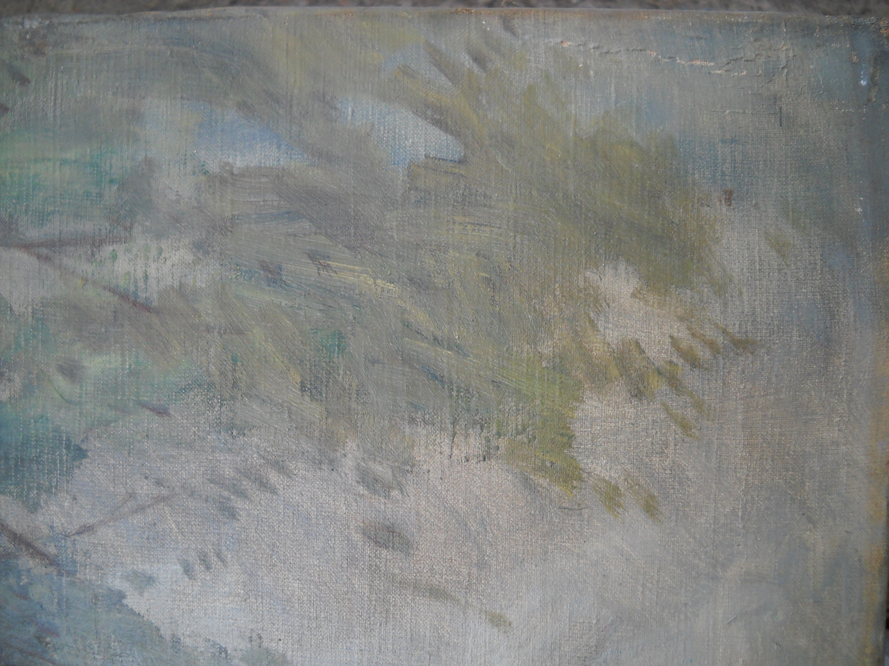
Hibák a kereten

A tisztítás kezdete
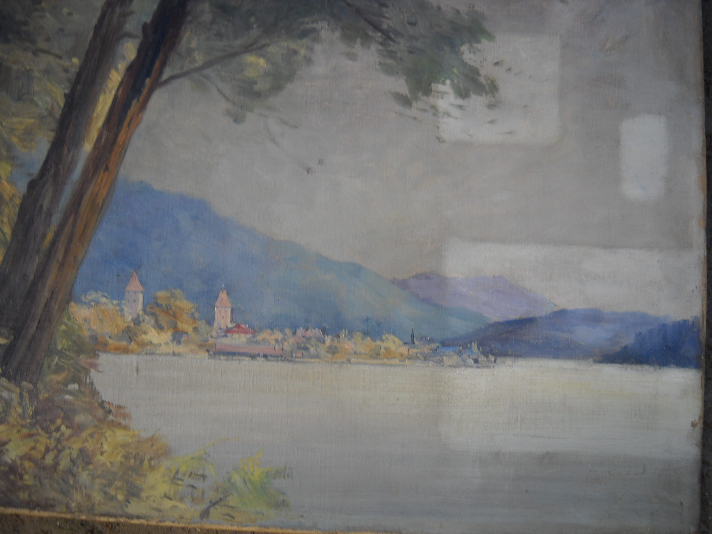
Tisztítás folyamatban
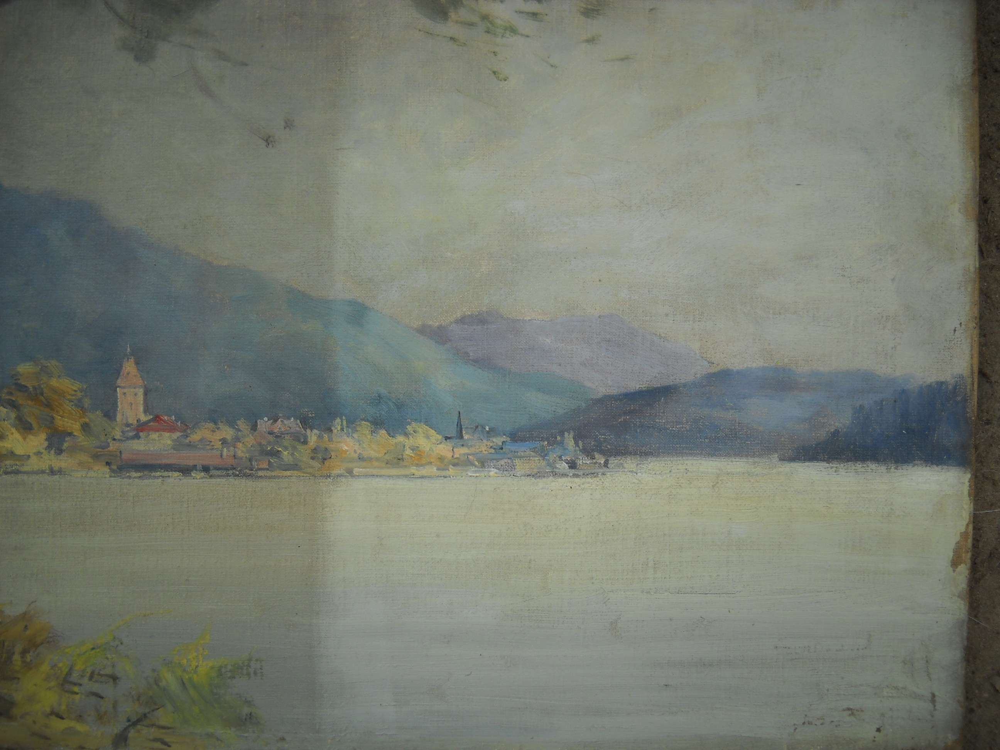
Készen
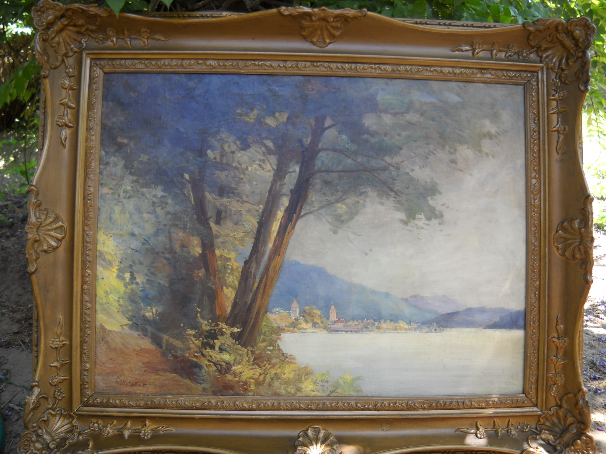
Ilyen volt
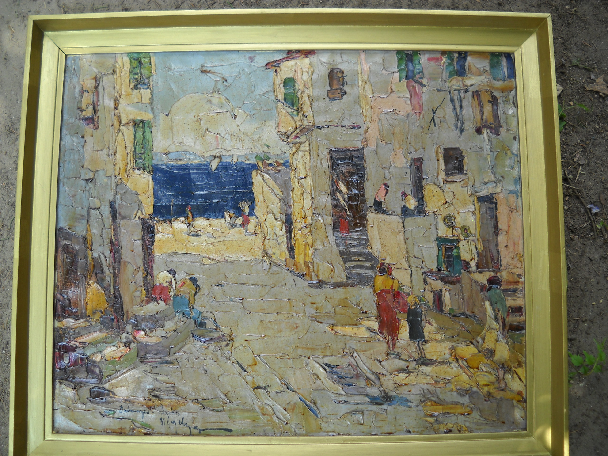
Hátulról sem egyszerű
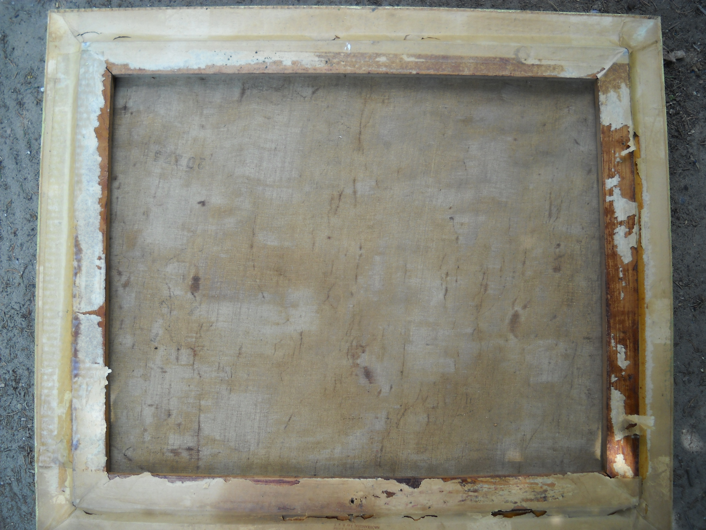
A vastag festékrétegen jobban megáll a kosz
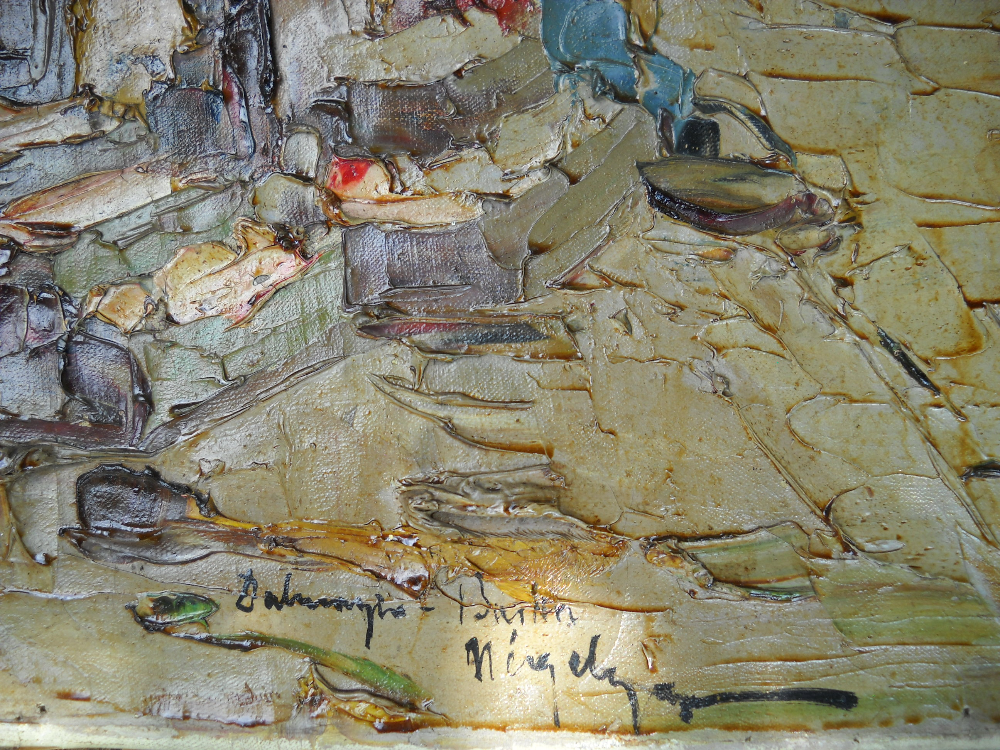
Ugyanakkor sérülékenyebb is a kép
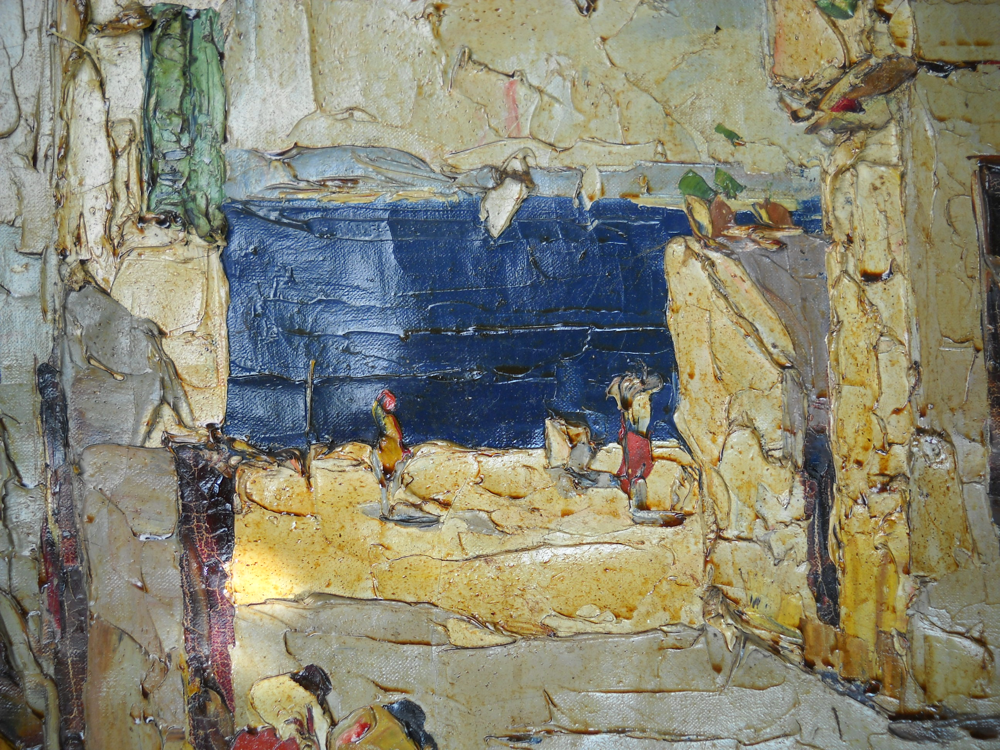
A tisztítás is nehezebb mint más képeknél
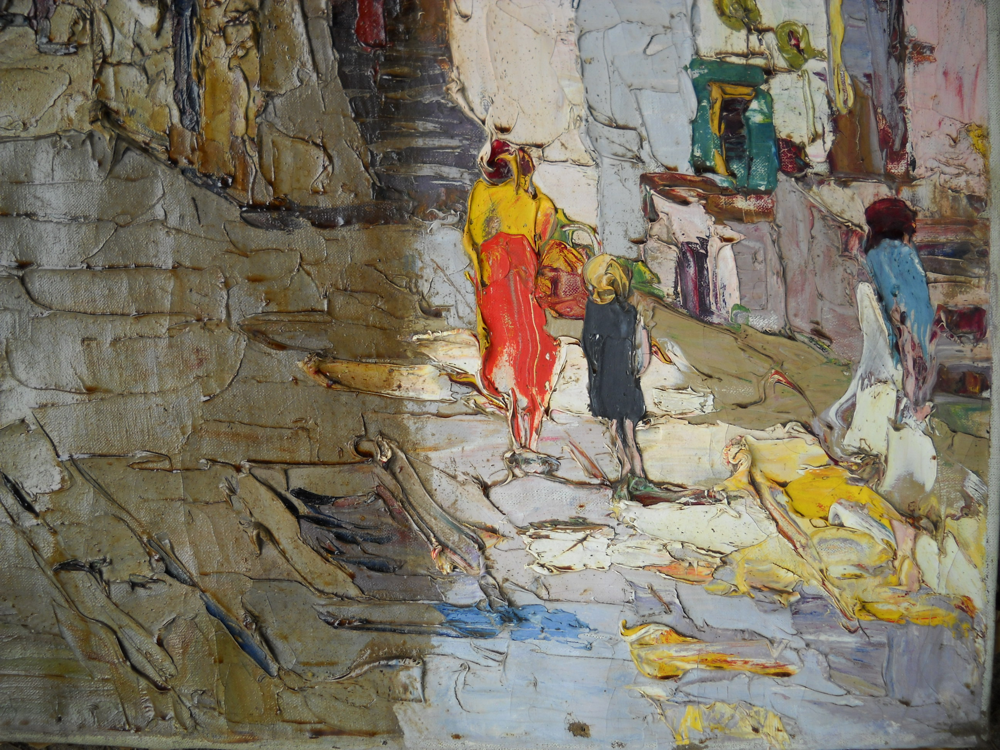
Tisztítás közben sokat változik a látvány
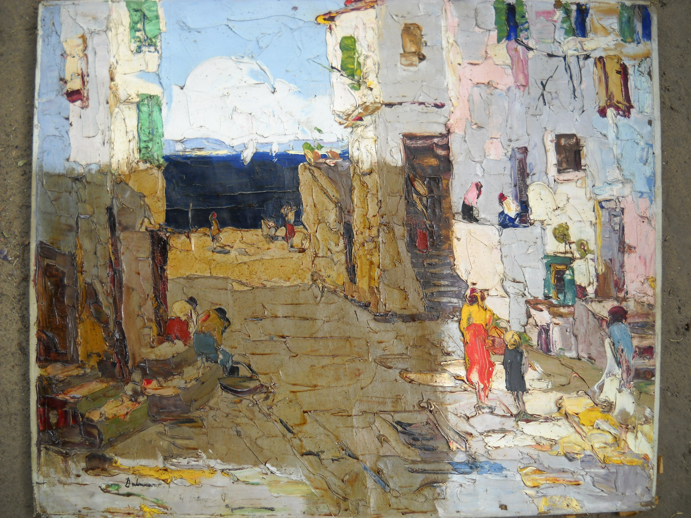
Elkészült
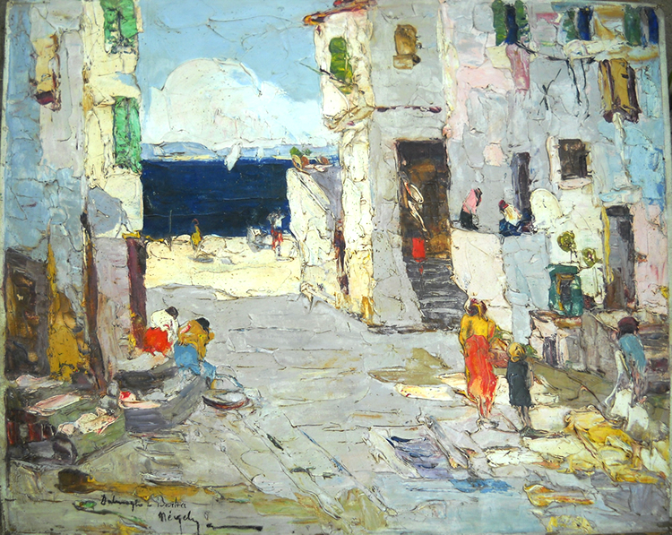
Elkészült